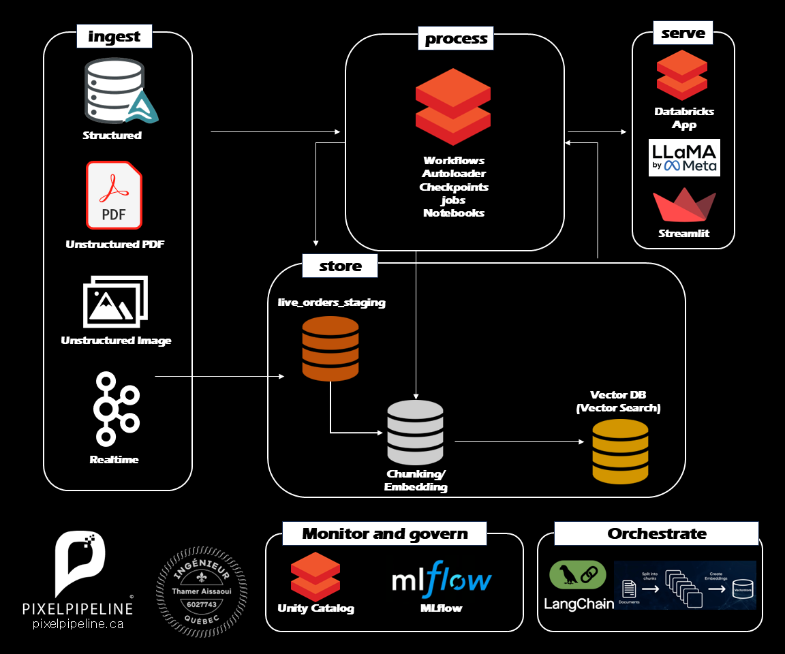

Enterprise RAG Architecture on Databricks
Scalable Knowledge Retrieval from Disparate Data Sources

The Architecture: Unified Knowledge Retrieval
Retrieval-Augmented Generation (RAG) is the gold standard for connecting LLMs to private corporate data. This project showcases a production-grade RAG system built on Databricks, designed to process and query millions of documents from both structured and unstructured sources with sub-second latency.
Video Demonstration
Multi-Modal Ingestion Strategy
We start by ingesting data from every corner of the enterprise: SQL databases for structured records, PDF and Image stores for unstructured documents, and high-frequency real-time event streams. This comprehensive ingestion ensures the AI has a 360-degree view of your organization's knowledge.
Serverless Processing with Databricks
The heavy lifting of data preparation is handled by Databricks Workflows. We utilize Autoloader for effortless incremental file capture and Delta Lake notebooks for scalable ETL jobs, ensuring that new information is processed, cleaned, and updated in real-time without managing infrastructure.
Vector DB & Embedding Pipeline
Insight is only as good as the retrieval. We implement a custom chunking and embedding pipeline that transforms raw text into multi-dimensional vectors. These are stored in a high-performance Vector Database (Vector Search), enabling semantic relationship matching that far exceeds traditional keyword search.
Deployable Serving Layer
Accessing the knowledge is seamless. We serve LLaMA models (by Meta) through a dual-interface approach: Databricks Apps for technical users and a custom Streamlit frontend for business stakeholders, providing a natural language interface to the entire corporate knowledge base.
Orchestration & Governance
The entire flow is managed by LangChain, orchestrating document splitting and vector store interactions. Governance is baked in via Unity Catalog, while MLflow provides a complete audit trail of model versions, embeddings, and overall system performance.
Privacy and Anonymization Notice
This architecture was originally designed and deployed as part of an Enterprise Knowledge Assistant initiative for a major Canadian financial institution. To preserve client confidentiality and comply with privacy obligations, all proprietary datasets, documents, and business entities have been removed from this demonstration. The version presented here has been anonymized and adapted using publicly available datasets (including DoorDash sample data) while preserving the original architectural patterns, technical design decisions, and implementation approach.